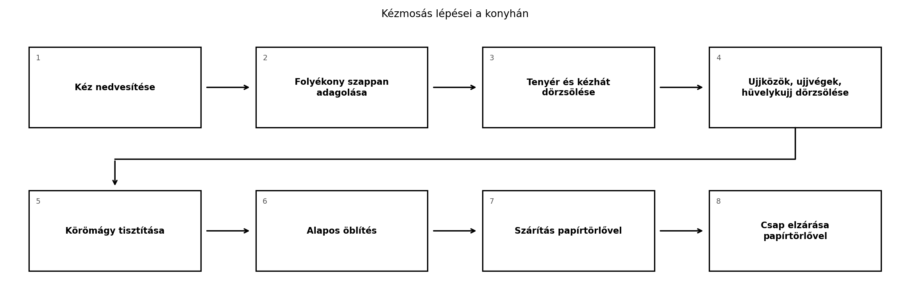

A vendéglátó konyhában a szakács keze, munkaruhája és egészségi állapota közvetlenül befolyásolja, hogy a vendég biztonságos ételt kap-e. Ez az alfejezet a személyi higiénia és az egészségügyi alkalmasság szabályait tanítja meg úgy, hogy a tanuló a munkahelyén azonnal alkalmazni tudja azokat.
Képzeld el, hogy reggel megérkezel a konyhába. A kezeden láthatatlan baktériumok milliói lehetnek, mert otthon megfogtad a kilincset, a táskádat, a buszon a kapaszkodót. Ha kezet mosás nélkül elkezded szeletelni a főtt sonkát, ezek a baktériumok átkerülhetnek a vendég ételére. A vendég néhány óra múlva rosszul lesz. A személyi higiénia nem udvariassági kérdés, hanem az élelmiszer-biztonság első védelmi vonala. Aki a konyhán dolgozik, annak a teste és a munkaruhája is „munkafelület”: tisztán kell tartani, és csak egészségesen szabad munkába állni.
Képzeld el, hogy a kezed bőrén apró, láthatatlan porszemek ülnek. Minden porszem egy-egy baktérium- vagy víruscsomag. Egyetlen négyzetcentiméternyi kézbőrön is sok ezer mikroba lehet (ellenőrizendő: mikrobiológiai tankönyv). Ha a kezeddel megérinted a nyers csirkemellet, majd a kész salátát, a nyers hús baktériumai átköltöznek a salátára. A salátát már senki sem hőkezeli, ezért a baktérium a vendég szervezetébe jut. A kézmosás ezt a láncot szakítja meg. Ugyanígy: a gyűrű alatt, a hosszú köröm alatt, a lelógó hajszálon és a szennyezett kötényen is megtelepedhetnek a kórokozók.
Definíció. Személyi higiénia a vendéglátásban a munkavállaló testének, ruházatának és viselkedésének az a tisztasági rendszere, amely megakadályozza, hogy az emberről szennyeződés vagy kórokozó kerüljön az élelmiszerre.
Definíció. Egészségügyi alkalmasság azt jelenti, hogy a munkavállaló egészségi állapota alapján biztonságosan dolgozhat élelmiszerrel, és nem terjeszthet ételfertőzést okozó betegséget.
Jogszabály. Az Európai Unió élelmiszer-higiéniai rendelete (852/2004/EK) előírja, hogy az élelmiszerrel dolgozó személynek megfelelő személyi tisztasággal kell rendelkeznie, és a munkáltatónak gondoskodnia kell arról, hogy a fertőző betegségben szenvedő vagy annak gyanújával érintett dolgozót ne engedjék élelmiszert kezelni (ellenőrizendő: pontos cikk és hazai végrehajtási rendelet). A magyar szabályozás az egészségügyi alkalmassági vizsgálatot és a munkaköri orvosi alkalmasságot külön rendeletben szabályozza (ellenőrizendő: hatályos rendeletszám). A munkáltató köteles a dolgozót kioktatni a higiéniai szabályokról, és ellenőrizni azok betartását.
Szabály. A konyhán dolgozó személy: - rövid, tiszta, festetlen körömmel, - ékszer, karóra, karkötő, gyűrű nélkül, - fedett hajjal (hajháló, sapka, kendő), szükség esetén szakállvédővel, - tiszta, jól záródó munkaruhában és csúszásmentes, zárt orrú munkacipőben dolgozik.
Szabály. Minden élelmiszerrel dolgozó személy köteles a munkája megkezdése előtt, a munkavégzés során szükség szerint, és minden szennyező tevékenység után kezet mosni.
Higiénia. A kézmosás az első számú védekezés a keresztszennyeződés ellen. A vendéglátó konyhában a kézmosó helyet folyékony szappannal, meleg vízzel, egyszer használatos papírtörlővel és – ha a HACCP-terv előírja – fertőtlenítő kézbedörzsölő szerrel kell felszerelni. A kézmosás elmaradása súlyos élelmiszer-biztonsági hiba. Helyesbítő tevékenység: azonnali kézmosás, a szennyezett élelmiszer elkülönítése, szükség esetén megsemmisítése. Dokumentálás: a HACCP-oktatási naplóban rögzíteni kell a dolgozók képzését és a higiéniai ellenőrzéseket (ellenőrizendő: üzemi HACCP-terv).
A kézmosás csak akkor hatékony, ha a lépéseket sorban, megfelelő ideig végezzük.
Gyakorlat. Kézmosás lépései a vendéglátó konyhán
A kézmosás javasolt időtartama legalább 20–30 másodperc, annyi ideig, amíg a szappanhabot alaposan szétdörzsöljük (ellenőrizendő: NÉBIH-útmutató).
A kilenc lépés kézállását az alábbi ábra mutatja; a képek számozása megegyezik az eljárás lépéseivel. A legtöbbször kimaradó felületek a kézhát és az ujjközök (4.), az ujjbegyek és a hüvelykujj (5.), valamint a körömágy (6.) – ezeknél a nyilak a dörzsölés irányát jelzik.
Ellenőrizd magad: mosás után nézd meg a hüvelykujjad tövét és a körmöd alját – ha ott szappanmaradék vagy szennyeződés van, a 4–6. lépés túl rövid volt. A 9. lépésben a papírtörlő azért kell, hogy a tiszta kéz ne érjen a szennyezett csapfogantyúhoz. A HTML-kiadásban lépésenként végignézheted a képsort, és egy 20 másodperces visszaszámlálóval kipróbálhatod, mennyi a dörzsölési idő.
A kézmosás alkalmai: - munkakezdéskor, - a mosdó vagy WC használata után, - szünetből, udvarról, raktárból való visszatéréskor, - nyers hús, baromfi, tojás, hal vagy zöldség előkészítése után, - a haj, arc, orr, száj megérintése után, - köhögés, tüsszentés, zsebkendőhasználat után, - dohányzás, telefonhasználat, étkezés után, - takarítás vagy hulladékkezelés után, - nyers és kész élelmiszer váltásakor, - amikor a kesztyűt leveszed vagy cseréled.

Egyszer használatos kesztyű szabályai. A kesztyű nem helyettesíti a kézmosást. Csak tiszta, száraz kézre szabad felvenni. A kesztyűt cserélni kell: - ha elhasználódott, kilyukadt vagy megsérült, - ha nyers élelmiszer megfogása után kész ételhez érsz, - ha elhagyod a munkaterületet (például telefonálsz, kinyitod a hűtő ajtaját, kilépsz a raktárba), - ha hozzáérsz az arcodhoz, hajadhoz, ruhádhoz, - ha különböző allergéneket tartalmazó ételeket készítesz egymás után. A kesztyű anyaga legyen élelmiszeripari minőségű, például nitril vagy vinil. A latex kesztyű allergiát okozhat, ezért kerülendő (ellenőrizendő: allergén- és munkavédelmi előírás).
Munkaruha. A munkaruhát kizárólag a konyhai munkához viseljük. Világos színű legyen, hogy a szennyeződés látszódjon. A ruhát minden nap, illetve erős szennyeződés után cserélni kell. A kötényt a munkafeladathoz kell igazítani: húsfeldolgozáshoz külön, készentartáshoz külön kötény használata ajánlott. A munkacipő csúszásmentes talpú, zárt orrú legyen, és csak a konyhában hordjuk. Az utcai ruhát és cipőt külön öltözőszekrényben vagy zsákban tároljuk.
Haj és szakáll. A haj mindig teljesen fedve legyen hajhálóval, konyhai sapkával vagy kendővel. A hosszú haj legyen összefogva. Az arcszőrzetre szakállvédőt kell használni, ha a munkáltató előírja.
Ékszerek és személyes tárgyak. Gyűrűt, karkötőt, karórát, fülbevalót, nyakláncot, testékszert a konyhában tilos viselni. Az ékszer alatt baktériumok maradhatnak, és az ékszer beleeshet az ételbe. A sima jegygyűrű is tilos, mert a szennyeződés alatta is megtapad (az üzemi szabály eltérhet – ellenőrizendő: HACCP-terv). A mobiltelefont ne használjuk a munkaterületen; ha mégis megfogtuk, utána kezet kell mosni.
Köröm. A körmöt röviden, tisztán kell tartani. Műköröm, körömlakk, körömdísz tilos, mert darabok letörhetnek belőle, és alatta szennyeződés gyűlik össze.
Sebek ellátása. Ha a kézen vágott vagy horzsolt seb van, azt azonnal vízálló, élelmiszeriparban használható, kék színű sebtapasszal kell leragasztani. A kék szín azért fontos, mert ha leesik, jól látható az élelmiszerben. Tiszta, kék tapasszal fedett seb mellett dolgozni lehet, de a tapaszra egyszer használatos kesztyűt kell húzni, és a kesztyűt gyakran kell cserélni. Gennyes, gyulladt seb esetén a dolgozó nem végezhet élelmiszerrel közvetlen munkát.
Az alábbi ábra a fenti szabályokat egyetlen ellenőrző képben foglalja össze. A bal oldali szakácson az 1–7. pont a helyes megjelenést mutatja (a kék sebtapasz színét a felirat jelzi), a jobb oldalin az a–h betűk a leggyakoribb hibákat.
Műszakkezdés előtt nézz végig magadon ugyanebben a sorrendben, fentről lefelé: fej, fül, nyak, kéz, zseb, kötény, cipő. A HTML-kiadásban a hibák jelölése kikapcsolható: így „Keresd meg!” gyakorlatként is használhatod a képet.
A szakácsnak a munkakör betöltéséhez érvényes orvosi alkalmassági igazolásra van szüksége. A foglalkozás-egészségügyi orvos vizsgálja meg, hogy a dolgozó egészséges, és nincs olyan betegsége, amely az élelmiszer útján terjedhet. Az igazolást a munkáltató őrzi, és a dolgozó csak annak birtokában állhat munkába. A korábban használt „egészségügyi kiskönyv” kifejezés ma már nem jelöli pontosan az aktuális eljárást: ma a munkaköri alkalmassági vizsgálat és az orvosi igazolás a jellemző (ellenőrizendő: hatályos egészségügyi és munkavédelmi rendelet). Az élelmiszerrel közvetlenül dolgozók munkaköri alkalmassági vizsgálata a személyi higiénés alkalmasság elbírálására is kiterjed; ezt a szakkifejezést használja a vizsgán és a munkahelyen is (a munkaköri, szakmai és személyi higiénés alkalmasság vizsgálatáról szóló 33/1998. (VI. 24.) NM rendelet – ellenőrizendő: hatályos szöveg és vizsgálati gyakoriság).
A munkáltató köteles a dolgozót higiéniai oktatásban részesíteni, és az oktatást dokumentálni. Az oktatásnak ki kell terjednie a kézmosásra, a munkaruha-viselésre, a bejelentési kötelezettségre és az allergén-keresztszennyeződésre.
A fertőző betegségben szenvedő vagy annak gyanújával érintett dolgozó nem érintkezhet élelmiszerrel. Ezért a dolgozónak haladéktalanul jelentenie kell a felettesének, ha az alábbi tüneteket észleli magán:
A felettes ilyenkor a dolgozót felfüggeszti az élelmiszerrel végzett munka alól, és orvosi vizsgálatra küldi; a hasmenés, hányás, láz, sárgaság és gennyes bőrfertőzés esetén a dolgozó csak orvosi igazolással térhet vissza. Az erős orrfolyást és köhögést is jelenteni kell: a felettes dönt az élelmiszertől távoli munkáról, maszkot és gyakori kézmosást írhat elő (ellenőrizendő: üzemi HACCP-terv; az egyszerű nátha önmagában nem kizáró ok). Ezt a szabályt a HACCP-rendszerben is rögzíteni kell, és a betegségek esetén követendő lépéseket a munkáltató írásban szabályozza.
Higiénia. A bejelentési kötelezettség a HACCP-rendszer része. A munkáltatónak ellenőriznie kell, hogy a dolgozók ismerik-e a tüneteket, és tudják-e, kinek jelentsenek. Helyesbítő tevékenység: a tünetes dolgozó azonnali kizárása az élelmiszerrel végzett munkából, a munkaterület és az élelmiszerek ellenőrzése, szükség esetén selejtezés. Dokumentálás: a munkaköri orvosi alkalmasság igazolása, a higiéniai oktatási napló és a betegség miatti munkavégzés alóli felmentés írásos rögzítése (ellenőrizendő: üzemi HACCP-terv).
Cél. A dolgozó műszakkezdés előtt ellenőrzi saját testi és ruházati tisztaságát, és szabályosan kezet mos.
Eszközök és anyagok. Folyékony szappan, meleg víz, egyszer használatos papírtörlő, körömkefe, fedeles hulladékgyűjtő, tiszta munkaruha, hajháló/sapka, csúszásmentes munkacipő, tükör.
Biztonsági korlát. A gyakorlatot tankonyhán vagy oktatói felügyelettel végezd. Otthon is gyakorolhatod a kézmosást, de a konyhai munkaruhát mindig a munkahelyi előírások szerint használd.
Higiéniai előkészület. A gyakorlat megkezdése előtt olvasd el a kézmosás lépéseit, és készítsd elő a kézmosó helyet.
Lépések.
Ellenőrzési pontok. A kezet megfelelően mosta meg a tanuló, ha a szappanos dörzsölés legalább 20–30 másodpercig tartott, a csapot papírtörlővel zárta el, és a kéz nem érintett szennyezett felületet utána.
Dokumentálás. A gyakorlat után rögzítsd egy naplóban a kézmosási gyakorlatot, és jelöld, ha hibát észleltél.
A személyi higiénia ellenőrzése során az alábbiakat kell megfigyelni: - A munkaruha tiszta, ép, a cipő csúszásmentes és zárt. - A haj teljesen fedett, az arcszőrzet szabályozott. - A köröm rövid, festetlen, műköröm nincs. - Ékszer, karóra nincs a dolgozón. - A kézen nincs látható szennyeződés vagy seb, illetve a seb fedve van kék sebtapasszal. - A dolgozó a kézmosási alkalmakat betartja. - A dolgozó ismeri a bejelentési kötelezettséget, és tudja, kinek kell jelentenie.
Hiba: A dolgozó gyűrűt hord a konyhában.
Ok: Kényelemből vagy megszokásból nem veszi le.
Veszély: A gyűrű alatt baktériumok maradnak, és az
ékszer beleeshet az ételbe.
Helyes gyakorlat: Minden ékszert le kell venni a
munkakezdés előtt.
Hiba: A dolgozó csak vízzel öblíti le a kezét,
szappan nélkül.
Ok: Azt gondolja, hogy a víz elég.
Veszély: A zsíros szennyeződés és a baktériumok nagy
része a bőrön marad.
Helyes gyakorlat: Mindig folyékony szappannal, a
lépéssor szerint kell kezet mosni.
Hiba: A dolgozó hasmenéssel megy be dolgozni, és
nem szól.
Ok: Fél a munkából való kieséstől, vagy nem ismeri a
szabályt.
Veszély: Ételfertőzést okozhat, és több vendég is
megbetegedhet.
Helyes gyakorlat: A tünetet azonnal jelenteni kell a
felettesnek, és a dolgozó nem érintkezhet élelmiszerrel.
Egy hétvégi rendezvényen a szakács megérkezett, kezet mosott, majd a mobiltelefonját is megfogta, hogy megnézze az üzenetét. Ezután a főtt sonkát szeletelte fel, és hidegtálat készített, amely órákig szobahőmérsékleten állt a rendezvényteremben. Több vendég a rendezvény után néhány órával hasmenéses, hányásos panasszal jelentkezett. A vizsgálat a szakács kezéről és orrából, valamint a sonkából Staphylococcus aureust mutatott ki. A legvalószínűbb magyarázat: a baktérium a szakács kezéről került a sonkára, és a langyos hidegtálban szaporodva mérget (enterotoxint) termelt; ez a méreg gyorsan, órákon belül okoz panaszt, és hőkezeléssel sem bontható le. Kezdetben a telefon érintése feltételezhető fertőzési útnak, de bizonyítani nem lehet, ezért a tanulságot a bizonyítható láncra építjük: a kézmosás minden nem konyhai tárgy (telefon, kilincs) érintése után kötelező, és a hidegtálat hűtve, a megadott hőmérsékleten kell tartani, hogy a baktérium ne szaporodhasson (ellenőrizendő: hidegen tartás hőmérséklete a referenciatáblában).
1. feladat (A). Fogalmazd meg, mit jelent a személyi higiénia a vendéglátásban.
2. feladat (A). Írd le a kézmosás lépéseit a megfelelő sorrendben: öblítés, szappan adagolása, nedvesítés, szárítás papírtörlővel, ujjközök dörzsölése, csap elzárása papírtörlővel.
3. feladat (B). Add meg, hogy a kézmosás után miért tilos a csapot kézzel elzárni, és hogyan kell helyesen eljárni.
4. feladat (B). Hasonlítsd össze a munkaruhára és az utcai ruhára vonatkozó higiéniai szabályokat. Írj legalább három különbséget.
5. feladat (C). Egy szakács vágott sebet szerez a kezén. Írd le lépésenként, mit kell tennie a seb ellátása során, és mikor dolgozhat újra élelmiszerrel.
6. feladat (D). Készíts ellenőrzőlistát a napi műszakkezdéshez. A lista legalább nyolc tételt tartalmazzon a személyi higiéniára vonatkozóan, és minden tételhez írd oda, hogy mi a megfelelő állapot.
Önellenőrzés – válaszok
1. feladat megoldás. A személyi higiénia a vendéglátásban a dolgozó testi, ruházati és viselkedési tisztaságának rendszere, amely megakadályozza, hogy emberről szennyeződés vagy kórokozó kerüljön az élelmiszerbe.
2. feladat megoldás. Helyes sorrend: 1. nedvesítés, 2. szappan adagolása, 3. ujjközök dörzsölése, 4. öblítés, 5. szárítás papírtörlővel, 6. csap elzárása papírtörlővel. (A teljes kézmosáshoz a tenyeret, a kézhátat, az ujjvégeket és a hüvelykujjat is dörzsölni kell.)
3. feladat megoldás. A csapot azért tilos kézzel elzárni, mert a csap szennyezett, és a tiszta kéz újra szennyeződne. Helyesen: a csapot a használt papírtörlővel kell elzárni, majd a papírtörlőt a fedeles hulladékgyűjtőbe dobni.
4. feladat megoldás. Például: a munkaruhát csak a konyhán belül viseljük, az utcai ruhát az öltözőben hagyjuk; a munkaruhát naponta cseréljük, az utcai ruha ettől független; a munkaruhának világosnak és záródónak kell lennie, az utcai ruha bármilyen lehet; a munkacipő csúszásmentes és zárt orrú, az utcai cipő nem alkalmas a konyhába.
5. feladat megoldás. 1. A sebet azonnal le kell mosni, fertőtleníteni. 2. Vízhatlan, élelmiszeripari, kék sebtapasszal le kell fedni. 3. A sebre egyszer használatos kesztyűt kell húzni, ha a munka közben sérül. 4. A kesztyűt gyakran cserélni kell. 5. Ha a seb tiszta és be van fedve (kék tapasz + kesztyű), a szakács azonnal dolgozhat. 6. Ha a seb gennyes vagy gyulladt, élelmiszerrel nem dolgozhat, orvoshoz kell fordulnia, és csak a gyógyulás után, az orvos véleménye szerint térhet vissza.
6. feladat megoldás. Példa ellenőrzőlistára:
- Haj fedve: hajháló/sapka.
- Köröm rövid, festetlen.
- Ékszer nincs: gyűrű, karóra, fülbevaló.
- Munkaruha tiszta, ép.
- Munkacipő csúszásmentes, zárt.
- Kéz tiszta, seb fedve.
- Kézmosás elvégezve.
- Telefon a munkaterületen kívül.
- Ha tünet van: jelentve a felettesnek.
A lista alapján minden tételnél a „megfelelő” állapotot kell
ellenőrizni.
A személyi higiénia a vendéglátásban az élelmiszer-biztonság alapja. A dolgozónak tiszta munkaruhában, fedett hajjal, rövid, festetlen körömmel, ékszer nélkül kell dolgoznia. A kézmosást folyékony szappannal, meleg vízzel, a lépéssor szerint, legalább 20–30 másodpercig kell végezni (ellenőrizendő: NÉBIH-útmutató). A csapot papírtörlővel kell elzárni. Az egyszer használatos kesztyű nem helyettesíti a kézmosást, és nyers élelmiszer után cserélni kell. A sebeket kék, vízálló sebtapasszal kell fedni, és a tapaszra kesztyűt kell húzni; gennyes, gyulladt seb esetén nem szabad élelmiszerrel dolgozni. A dolgozónak érvényes egészségügyi alkalmassági igazolással kell rendelkeznie (ellenőrizendő: aktuális szabály). Hasmenés, hányás, láz, gennyes bőrfertőzés, sárgaság vagy torokgyulladás esetén a dolgozó köteles jelenteni a felettesének, és nem érintkezhet élelmiszerrel. Továbbvitt eredmény. A kézmosás és a munkába állás higiéniai feltételei szükségesek az A vendéglátó üzlet higiéniai kialakítása alfejezethez, ahol a helyiségek, berendezések és a személyzet együttes higiéniai rendszerét tárgyaljuk.
Forrástípusok. 852/2004/EK rendelet a személyi higiéniáról; hazai munkaköri és személyi higiénés alkalmassági rendelet (33/1998. (VI. 24.) NM rendelet – ellenőrizendő: hatályos szám és szöveg); NÉBIH jó higiéniai gyakorlat útmutatói; üzemi HACCP-terv és higiéniai oktatási anyagok.
Ellenőrizendő pontok. A kézmosás minimális időtartama (20–30 másodperc); az egészségügyi kiskönyv, a munkaköri és személyi higiénés alkalmassági vizsgálat (33/1998. (VI. 24.) NM rendelet) hatályos szövege és gyakorisága; a kesztyű anyagára és a kék sebtapaszra vonatkozó előírások; a bejelentési kötelezettség tüneteinek pontos listája a 852/2004/EK rendeletben. A fenti értékek tanulási adatok, az üzemi gyakorlatban a hatályos jogszabály és a HACCP-terv a mérvadó.